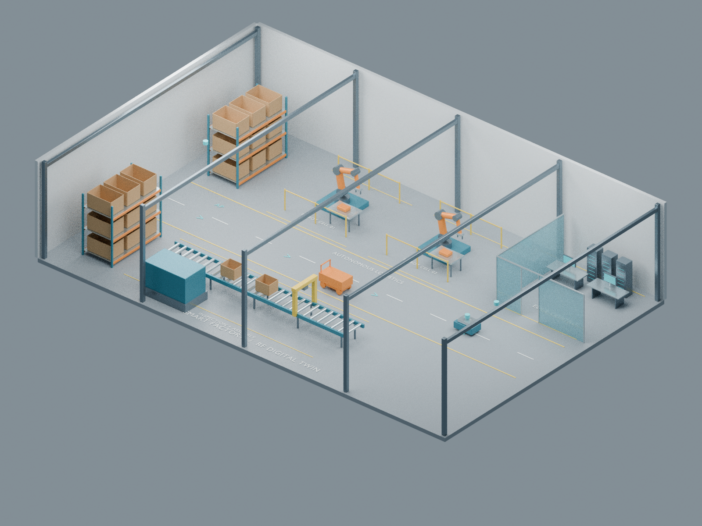
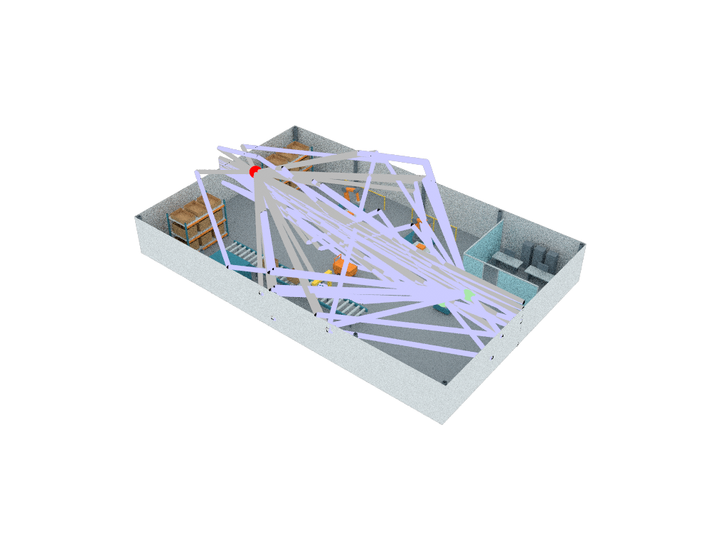

Research
Learning-based optimization of intelligent wireless networks
My research applies deep reinforcement learning to the design and optimization of next-generation wireless networks. At the Wireless Intelligent Networks (WIN) Lab, I build ns-3 simulation environments to train and evaluate RL agents — such as Deep Q-Networks (DQN) — for Wi-Fi 7 multi-link operation, and I study how learning-based methods can optimize emerging 6G technologies.
More broadly, I'm interested in the intersection of reinforcement learning, networking, and applied machine learning: how adaptive, data-driven agents can manage the growing complexity of modern communication systems while remaining reproducible and reliable.
Research Interests
6G Technologies
Optimizing Fluid Antenna, Pinching Antenna, RSMA, and NOMA in cellular systems.
Integrated Sensing & Communication
ISAC: exploring joint sensing and data communication in next-generation wireless networks.
Reinforcement Learning for Networks
Designing and training DQN agents for intelligent WiFi and cellular network optimization.
Wi-Fi 7 & Multi-Link Operation
Application-aware, learning-based uplink traffic allocation across MLO links.
Network Simulation
Building reproducible ns-3 experimentation environments for RL research.
Applied Machine Learning
Predictive modeling and production ML pipelines on large real-world datasets.
Optimization
Multi-objective ("quadrilemma") optimization for resource-constrained systems.
Wireless Modeling
Smart-industry simulation with Sionna RT
My smart-factory simulation combines a Blender model of an industrial environment with Sionna RT ray tracing to study wireless propagation, reflections, and blockage. These renders show the factory scene and the computed radio paths through it.
Smart-factory scene

Rendered propagation paths

Explore the tools: Sionna RT tutorial